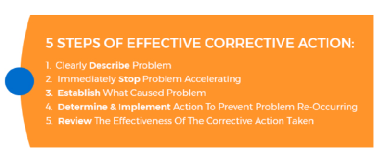
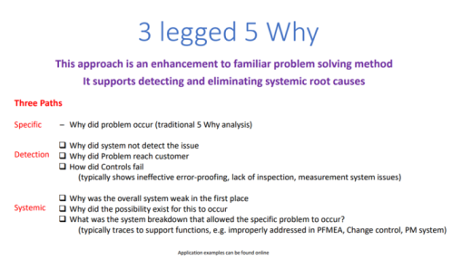

5 Steps of Effective Corrective Action

Step 1: Clearly Describe Problem
Example (a): Employee falls down a hole on a workshop floor, excavated by contractors ‐ making this a problem concerned with the management of environmental health and safety.
Example (b): Wrong item sent to customer ‐ making this a problem related to quality management.
Step 2: Immediately Stop Problem Accelerating (Commonly Referred To As “Containment Action”)
Example (a): Barrier the hole to prevent further employees for falling down the hole.
Example (b): Order correct item. Have wrong item collected. Send correct item ASAP.
Step 3: Establish What Caused Problem (Commonly Referred To As ‘Root Cause’)
There are a number of tried and tested techniques available to use to help establish root cause; of which training should be given to the people in an organization who would have this responsibility.
e.g. 5 Why’s. It is often far too easy to just state ‘human error.’
So What Are The 5 Why’s?
5 Whys is an iterative interrogative technique used to explore the cause-and-effect relationships underlying a particular problem. The primary goal of the technique is to determine the root cause
of a defect or problem by repeating the question "Why?" Each question forms the basis of the next question.

The "5" in the name derives from an anecdotal observation on the average number of iterations needed to resolve the problem.

Here Is An Example Of A CNC Machine That Stopped Mid Operation:
"Why did the machine stop?" The circuit has overloaded, causing a fuse to blow.
"Why is the circuit overloaded?" There wasn’t enough lubrication on the bearings, so they locked up.
"Why was there not enough lubrication on the bearings?" The oil pump on the machine was not circulating sufficient oil.
"Why is the pump not circulating sufficient oil?" The pump intake was clogged with metal shavings.
"Why is the intake clogged with metal shavings?" Because there was no filter on the pump. This is the root cause.
Example (a):
Why did the employee fall down the hole? The hole had no barrier & no communication to staff that such works were taking place.
Why were there no barrier & no communication? Contractor assigned to excavate hole entered the premises unannounced & commenced works without making their presence known.
Why did they not report to reception / make their presence known & no communication? No one informed the contractor when to arrive & processes on site.
Why was the contractor not informed? No system in place or Permit to Work for managing contractors on site. This is the root cause.
Example (b):
Why was the wrong item ordered & sent? Wrong details entered into system by new member of staff unfamiliar with company’s products.
Why was it possible to enter the wrong details? System does not prompt to check & confirm details with the customer & allows any member of staff to take orders. This is the root cause.
Step 4: Determine And Implement Action To Prevent Problem Re-Occurring (Commonly Referred To As Corrective Action)
Example (a):
Implement Permit to Work System, purchase site signage to instruct all contractors to enter via reception & communicate these arrangements to contractors before they come on site.
Example (b):
Add check into system that prompts checking with the customer what they ordered. Add log-in to system with competence requirements required to be given a log in.
Step 5: Review The Effectiveness Of The Corrective Action Taken ‐ i.e. Did It Work?
This is essentially a small audit of the above proposed corrective actions; by firstly checking that they were actually carried out and then looking for examples of similar activities
that have taken place since and verify that the initial problem did not re-occur. This step can be justifiably left over for several months to allow sufficient time to pass.
It’s to check that the corrective actions have been imbedded properly.
Example (a):
Check that a Permit to Work System has been implemented and suitable site signage purchased and fitted. Then look for work that has been done on site checking that the arrangements
had been communicated to the contractors before they come on site, they signed in at reception and were not permitted to carryout enter works until they had been inducted and permit to work issued.
Example (b):
Check that new step has been added into system that prompts checking with the customer what they ordered. Check that a log-in to system has been added with competence requirements
required for such. Then look at the newest employees to ensure that they have the correct competence for any log in that they may have been given.